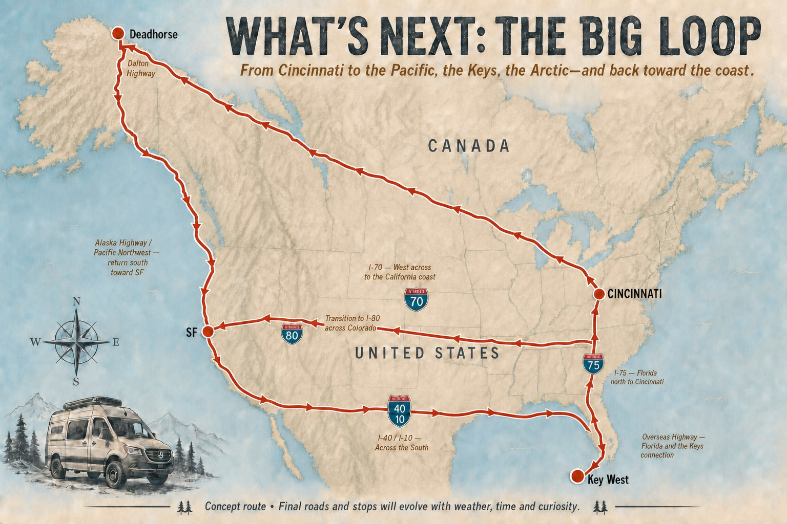

Departing October 18, 2026
The Transcontinental Odyssey
Key West to Deadhorse—in PourHouse, on a route designed to make the journey every bit as important as the destinations.
Counting downUntil departure
Key WestSouthern marker
DeadhorseNorthern marker
PourHouseHome on the road
The live trip hub
The story will unfold here.
This page becomes the expedition’s front door: current location, route progress, newest Field Notes, photo dispatches, video, and ways to follow along.
Now
Preparing PourHouse
Final systems, branding, route research, and a growing list of places we refuse to rush past.
Oct. 18
Departure
The Odyssey begins. The first dispatch will appear here.
On road
New Field Notes
Longer updates every two or three weeks, with social posts between them.